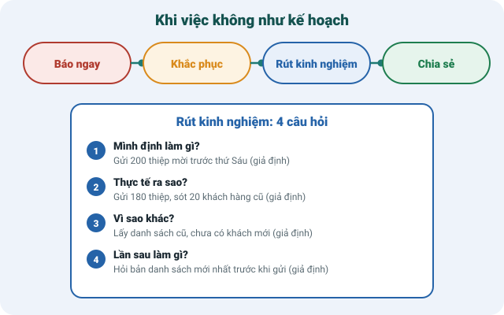

K6 · Thích ứng và bền bỉ › Bậc 3 Vững vàng
Khi việc không như kế hoạch, báo ngay, khắc phục và rút kinh nghiệm
Bài này làm Tờ 5: Phiếu rút kinh nghiệm. Mẫu in. Phần tinh thần khi gặp thất bại (thiền, Stoicism) nằm ở tamhonkhoe.com. Ở đây ta học cách làm việc.
1. Mục tiêu
- Báo một sai sót trong ngày, gồm việc gì, ảnh hưởng gì, đang khắc phục ra sao.
- Rút kinh nghiệm bằng 4 câu hỏi, viết ra một cách làm mới để thử.
2. Khởi động truy xuất
- Sửa tạm và sửa gốc khác nhau thế nào?
- Khi hỏi "Vì sao?", nên hỏi về người hay về quy trình?
Đáp án
- Sửa tạm chặn hậu quả ngay. Sửa gốc làm sự cố không lặp lại.
- Về quy trình.
Xem lại: Tìm nguyên nhân gốc.
3. Giải thích
Trong 90 ngày đầu, bạn sẽ có lúc làm hỏng. Kế hoạch cũng sẽ đổi giữa chừng. Điều người khác nhớ là bạn xử lý thế nào sau đó.

1. Báo ngay. Báo càng sớm, càng nhiều cách cứu. Tin báo gồm 3 ý: việc gì sai, ảnh hưởng tới ai, bạn đang làm gì. Không cần kể lể xin lỗi dài.
2. Khắc phục. Làm phần trong khả năng của bạn ngay. Phần ngoài khả năng thì xin hỗ trợ.
3. Rút kinh nghiệm. Khi việc đã ổn, trả lời 4 câu:
Bốn câu hỏi rút kinh nghiệm
- Mình định làm gì?Kết quả mong đợi.
- Thực tế ra sao?Có số liệu nếu được.
- Vì sao khác?Tìm ở cách làm, không tự trách.
- Lần sau làm gì?Một hành động cụ thể để thử.
4. Chia sẻ. Nếu bài học có ích cho người khác, nói ngắn trong buổi họp nhóm. Hoặc đề xuất thêm một bước vào quy trình.
Khi kế hoạch thay đổi. Thay đổi không phải lỗi của ai. Nhưng các bước gần giống:
- Hỏi để hiểu lý do: "Dạ, đổi vì khách đổi yêu cầu phải không ạ?"
- Cập nhật Tờ 1: việc nào dừng, việc nào lùi, hạn mới.
- Báo cho người đang chờ kết quả của bạn.
Giữ chất lượng khi có áp lực. Áp lực thời gian dễ khiến ta bỏ bước kiểm tra. Hãy giữ lại bước kiểm cuối, nhất là với việc liên quan tiền và an toàn.
4. Ví dụ tại nơi làm việc Việt Nam
Tình huống giả định. Ngân làm trợ lý sự kiện được 7 tuần ở một khách sạn tại Nha Trang. Ngân gửi thiệp mời tiệc tri ân khách hàng. Sáng thứ Hai, quản lý hỏi sao một khách lớn chưa nhận thiệp.
Ngân kiểm tra và thấy mình đã dùng danh sách năm ngoái. 20 khách mới bị sót. Trong 15 phút, Ngân nhắn quản lý:
"Dạ chị, em gửi thiếu 20 khách mới vì dùng danh sách cũ. Tiệc còn 5 ngày. Em đang gửi bù cả 20 thiệp, xong trước 11:00, kèm gọi điện cho 5 khách lớn. Chị cần em làm thêm gì không ạ?"
Sau tiệc, Ngân viết Tờ 5 như Hình 1. Ngân đề xuất thêm một bước vào quy trình: xin phòng kinh doanh xác nhận danh sách trước khi gửi. Quản lý đưa bước này vào mẫu công việc của bộ phận.
Vì sao cách này tốt: Ngân báo trong ngày, kèm hành động cụ thể. Phần rút kinh nghiệm tìm ở cách làm, nên ra được một bước mới cho cả nhóm.
5. Thực hành
Tình huống giả định. Bạn là nhân viên kế toán mới ở một công ty xây dựng tại Cần Thơ. Bạn chuyển khoản tiền cọc cho nhà cung cấp, nhưng gõ sai số tài khoản ở một chữ số. Ngân hàng báo lệnh bị trả về sau 2 giờ. Nhà cung cấp gọi hỏi vì chưa nhận được tiền.
Viết tin báo cho kế toán trưởng. Sau đó trả lời 4 câu hỏi rút kinh nghiệm.
Gợi ý 1
Tin báo cần 3 ý: việc gì sai, ảnh hưởng tới ai, bạn đang làm gì.
Gợi ý 2
Câu "Lần sau làm gì?" nên là một bước kiểm cụ thể, không phải "cẩn thận hơn".
Lời giải mẫu
Tin báo: "Dạ anh, lệnh chuyển cọc cho nhà cung cấp thép bị trả về vì em gõ sai một số tài khoản. Tiền đã về lại tài khoản công ty. Em đã gọi xin lỗi nhà cung cấp. Em lập lại lệnh, nhờ anh duyệt trước 15:00 để họ nhận trong hôm nay ạ."
Rút kinh nghiệm:
- Định: chuyển cọc trong buổi sáng.
- Thực tế: lệnh bị trả, nhà cung cấp nhận chậm khoảng nửa ngày.
- Vì sao: em gõ tay số tài khoản, không đối chiếu lại.
- Lần sau: chép số tài khoản từ hợp đồng, đọc so từng nhóm 4 số trước khi gửi duyệt.
(Tình huống là giả định. Quy trình chuyển tiền thật làm theo quy định của công ty.)
6. Tự kiểm tra
Chọn đáp án. Mỗi lựa chọn đều có giải thích.
Câu 1. Bạn phát hiện mình gửi nhầm báo giá cũ cho khách. Tin báo nào tốt nhất?
-
Chưa đúng. Có lời xin lỗi nhưng thiếu ảnh hưởng và việc đang làm để khắc phục.
-
Đúng. Đúng. Đủ 3 ý, có số liệu, và cho thấy bạn đã khắc phục.
-
Chưa đúng. Nếu khách đã dùng bản cũ, quản lý cần biết để xử lý tiếp.
Câu 2. Câu trả lời nào phù hợp cho câu hỏi "Lần sau làm gì?"
-
Chưa đúng. Quá chung chung. Không ai kiểm được bạn đã làm hay chưa.
-
Đúng. Đúng. Một bước cụ thể, làm được và kiểm được.
-
Chưa đúng. Né việc không giúp bạn tiến bộ, và thường không thực tế.
Câu 3. Trưởng nhóm đổi hạn dự án sớm hơn một tuần. Bạn làm gì trước?
-
Đúng. Đúng. Hiểu lý do giúp chọn đúng việc cần cắt hoặc lùi.
-
Chưa đúng. Không giúp việc tiến lên, và dễ ảnh hưởng không khí nhóm.
-
Chưa đúng. Bỏ kiểm tra dễ gây lỗi lớn hơn. Hãy xin cắt phạm vi thay vì bỏ kiểm tra.
Câu 4. Khi trả lời "Vì sao khác?", bạn nên tìm ở đâu?
-
Chưa đúng. Tự trách không chỉ ra được điều gì để làm khác đi.
-
Đúng. Đúng. Cách làm thì sửa được, nên lần sau kết quả khác.
-
Chưa đúng. Có thể đúng một phần, nhưng nên tìm thêm phần mình làm khác được.
7. Phản tư
- Lần gần nhất bạn làm hỏng một việc, bạn báo sau bao lâu? Nếu báo sớm hơn thì khác gì?
- Câu "Lần sau làm gì?" của bạn có đủ cụ thể để người khác kiểm được không?
8. Áp dụng thật
Trong 7 ngày tới, chọn một việc không như kế hoạch, lớn hay nhỏ. Viết Tờ 5 với 4 câu hỏi. Thử cách làm mới ở lần sau, rồi ghi kết quả vào cuối tờ.
9. Siêu dữ liệu
| skill | K6 · Thích ứng và bền bỉ |
|---|---|
| level | Bậc 3 · Vững vàng |
| group | N3 |
| framework_map | WEF: Resilience, flexibility and agility; SkillsFuture CCS: Adaptability; LifeComp: P2 Flexibility (chỉ dẫn chiếu) |
| updated | 2026-11-14 |
Hoàn thành bài
Đánh dấu đã học để site gợi ý lịch ôn sau 1, 3 và 7 ngày. Dữ liệu chỉ lưu trên máy của bạn.
Lịch ôn gợi ý: